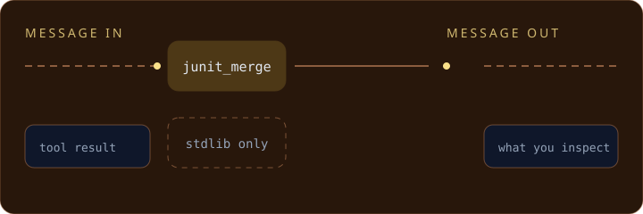

Duplicate tests
A test that appears in more than one report (the usual result of a retry) is resolved with on_duplicate:
| policy | behaviour |
|---|---|
keep-worst (default) | keep the failure or error over the pass; a test that failed anywhere stays failed |
keep-first | keep the first occurrence |
keep-last | keep the last occurrence |
keep-both | keep every occurrence |
fail | raise, naming the test, instead of guessing |
Keeping the worst outcome is the safe default: a flaky retry cannot hide a real failure from the report.
Install
consolepip install junit-merge
API
pythonfrom junit_merge import merge, merge_files, parse, parse_file, to_xml
report = parse_file("shard-1.xml") # Report
merged = merge([report, parse_file("shard-2.xml")], on_duplicate="keep-worst")
merged.tests, merged.failures, merged.errors, merged.skipped, merged.time
data = to_xml(merged) # bytes, valid <testsuites> document
parse accepts str, bytes, a path is handled by parse_file, and a document name-spaced by tools like Jenkins is understood. Invalid XML raises ValueError with the reason, not a bare ParseError.
What is preserved
classname,name,time,file,line<failure>,<error>and<skipped>includingmessageand the text body<system-out>and<system-err>- suite
<properties>, first value winning on a clash
Cases are sorted by class and name by default, so two runs of the same merge produce identical bytes; pass sort=False to keep the input order.
What is not
- It does not run tests, retry them or upload anything: it merges files.
- Attributes nobody sets from test cases (
timestamp,hostname) are not invented. - A report whose contents contradict each other is trusted on the cases, which is
the only part that can be verified.
Development
consolepython -m venv .venv
.venv/bin/pip install -e ".[test]"
.venv/bin/pytest
The suite covers every line of the package (pytest --cov --cov-branch), and the examples in the docstrings run as tests through --doctest-modules.
License
MIT.
Other libraries here
One problem each, standard library only, no runtime dependencies.
- argrepair — turn a bad tool call into a message the model can act on
- backoff-headers — turn a rate-limit header into the exact time to wait
- columncheck — find the CSV defect before the pipeline does
- dir-digest — one hash for a directory tree, identical on every OS
- docanchor — catch every broken heading anchor in your docs
- envfile-diff — diff two .env files without printing the secrets
- fsync-replace — replace a file so a crash cannot leave it half-written
- header-date — HTTP dates parsed strictly, formatted correctly
- npm-semver — npm semver ranges, parsed the way npm parses them
- outputcap — keep a huge tool result out of the context window
- outputcap-cli —
- parse-size — byte sizes in and out, MB and MiB never confused
- path-containment — keep untrusted paths inside their directory
- redactscope — stop secrets in tool results before they reach the model
- runbudget — a per-run cost cap that warns before it stops
- testflakes — rank your flaky tests from the history you already have
- tool-loop-guard — catch an agent repeating itself while it is still cheap
- toolcall-ledger — a hash-chained record of every tool call
- toolcircuit — stop retrying a tool that is down
- toolquota — client-side rate limits your agent loop can wait on
- wheeldeps — read a wheel's dependencies offline, markers included
- zip-deterministic — byte-identical archives, build after build